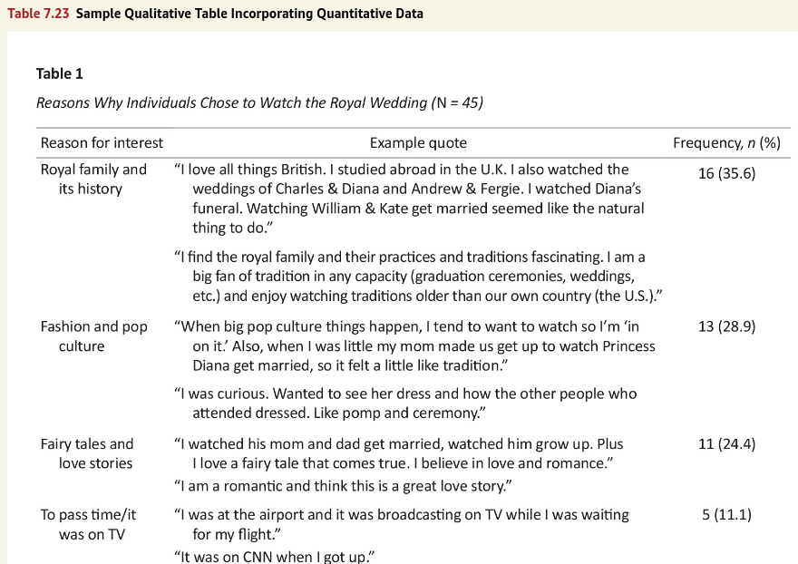

![]()
library(apa7)
library(flextable)
library(ftExtra)
library(tidyverse)
library(easystats)
library(lme4)
set_flextable_defaults(theme_fun = theme_apa,
font.family = "Times New Roman")Making tables in APA style (Part 23 of 24)
In this 24-part series, each of the tables in Chapter 7 of the Publication Manual of the American Psychological Association (7th Edition) is recreated with apa7, flextable, easystats, and tidyverse functions.
NoteHighlights
- Use of
hanging_indent - Use of
flextable::merge_vto remove redundant content
Figure 1
Screenshot of the APA Manual’s Table 7.23

Making this table was relatively straightforward, except that I needed to play with the column widths and hanging indents until they fit in a table that is 6.5 inches wide.
The Reason for interest column needed vertical merging to remove redundant content.
The frequency column was aligned on the decimal with align_chr.
```{r}
#| label: tbl-723
#| tbl-cap: "Reasons Why Individuals Chose to Watch
#| the Royal Wedding (*N* = 45)"
tibble(
`Reason for interest` = c(
"Royal family and its history",
"Royal family and its history",
"Fashion and pop culture",
"Fashion and pop culture",
"Fairy tales and love stories",
"Fairy tales and love stories",
"To pass time/it was on TV",
"To pass time/it was on TV"),
`Example quote` = c(
paste(
"\"I love all things British. I studied abroad in",
"the U.K. I also watched the weddings of Charles",
"& Diana and Andrew & Fergie. I watched Diana's",
"funeral. Watching William & Kate get married",
"seemed like the natural thing to do.\""),
paste(
"\"I find the royal family and their practices",
"and traditions fascinating. I'm a big fan of",
"tradition in any capacity (graduation ceremonies,",
"weddings, etc.) and enjoy watching traditions",
"older than our country (the U.S.).\""),
paste(
"\"When big pop culture things happen, I tend to",
"want to watch so I'm 'in on it.' Also, when I was",
"little my mom made us get up to watch Princess",
"Diana get married, so it felt a little like",
"tradition.\""),
paste(
"\"I was curious. Wanted to see her dress and how",
"the other people who attended dressed. Like pomp",
"and ceremony.\""),
paste(
"\"I watched his mom and dad get married, watched",
"him grow up. Plus I love a fairy tale that comes",
"true. I believe in love and romance.\""),
paste(
"\"I am a romantic and I think this is a great",
"love story.\""),
paste(
"\"I was at the airport and it was broadcasting on",
"TV when I was waiting for my flight.\""),
paste("\"It was on CNN when I got up.\"")),
`Frequency, *n* (%)` = c(
"16 (35.6)",NA,
"13 (28.9)",NA,
"11 (24.4)",NA,
"5 (11.1)",NA)
) |>
mutate(`Reason for interest` = hanging_indent(`Reason for interest`, width = 16),
`Example quote` = hanging_indent(`Example quote`, width = 50),
`Frequency, *n* (%)` = align_chr(`Frequency, *n* (%)`)) |>
apa_flextable(line_spacing = 1.5) |>
align(j = 1:2) |>
width(width = c(1.4, 3.8, 1.3)) |>
merge_v(j = 1)
```Table 1
Reasons Why Individuals Chose to Watch the Royal Wedding (N = 45)
Reason for interest | Example quote | Frequency, n (%) |
|---|---|---|
Royal family and | “I love all things British. I studied abroad in | 16 (35.6) |
“I find the royal family and their practices and | ||
Fashion and pop | “When big pop culture things happen, I tend to | 13 (28.9) |
“I was curious. Wanted to see her dress and how | ||
Fairy tales and | “I watched his mom and dad get married, watched | 11 (24.4) |
“I am a romantic and I think this is a great love | ||
To pass time/it | “I was at the airport and it was broadcasting on | 5 (11.1) |
“It was on CNN when I got up.” |
Citation
BibTeX citation:
@misc{schneider2025,
author = {Schneider, W. Joel},
title = {Recreating {APA} {Manual} {Table} 7.23 in {R} with Apa7},
date = {2025-10-03},
url = {https://wjschne.github.io/posts/apatables/apa723.html},
langid = {en}
}
For attribution, please cite this work as:
Schneider, W. J. (2025, October 3). Recreating APA Manual Table 7.23 in
R with apa7. Schneirographs. https://wjschne.github.io/posts/apatables/apa723.html